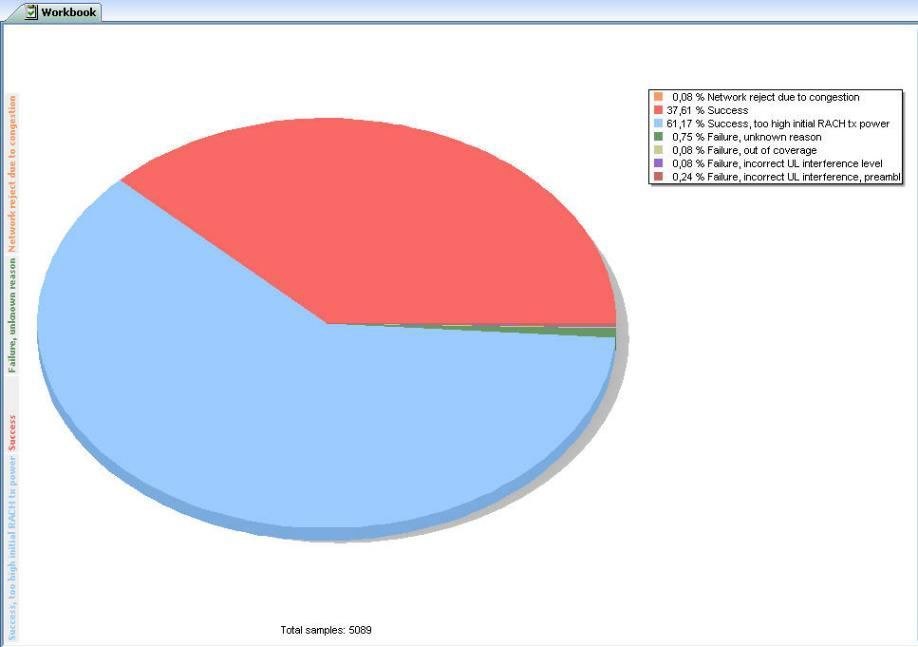
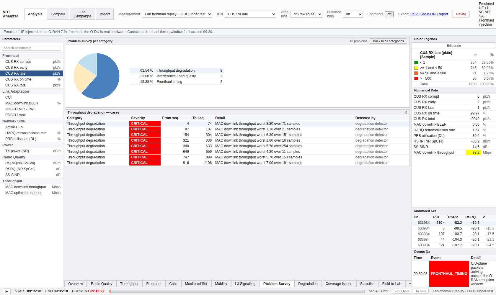
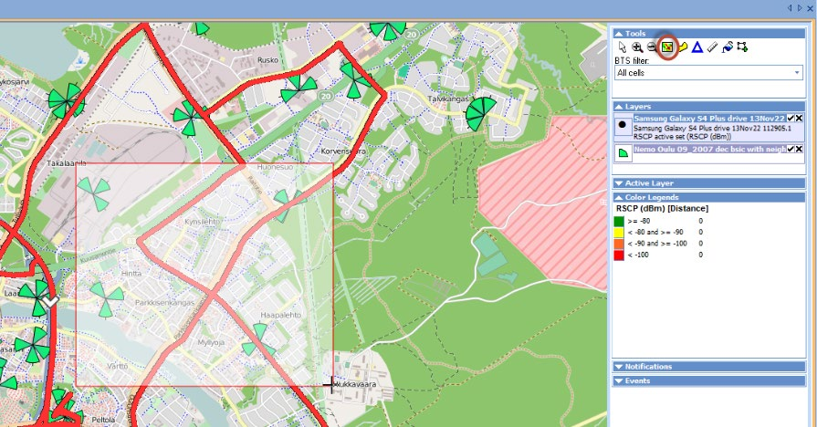
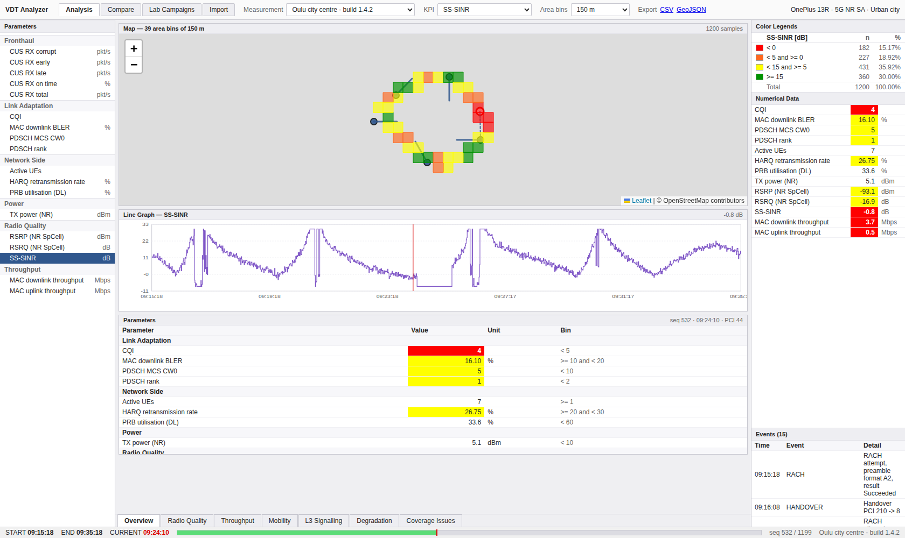
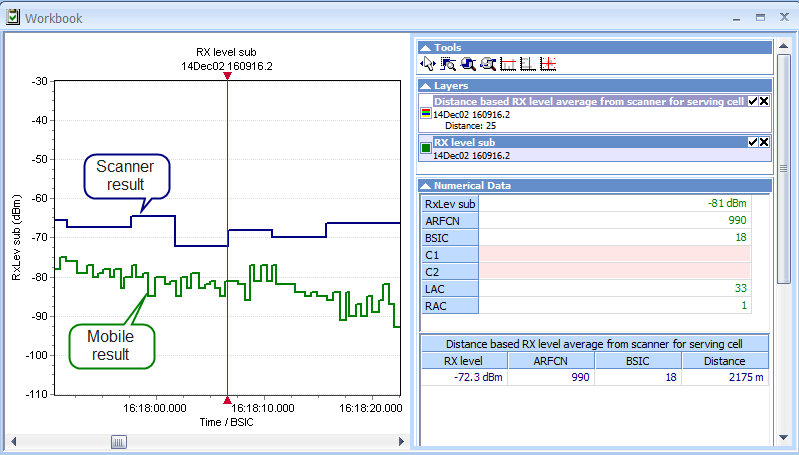
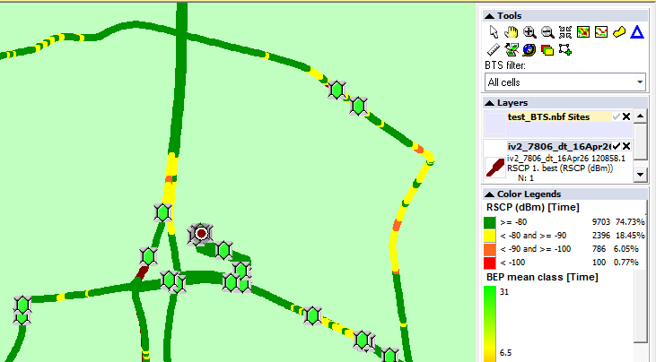
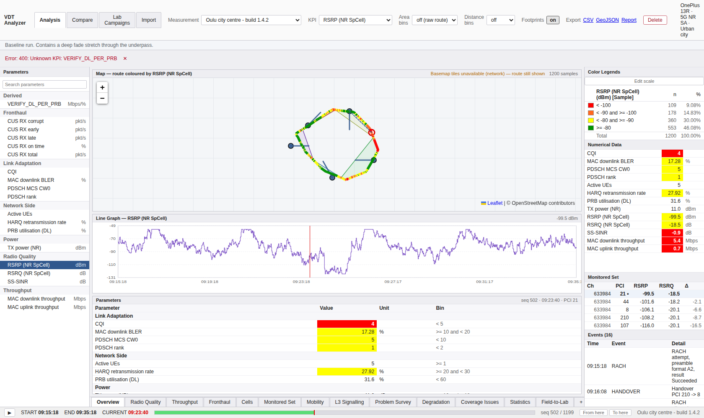
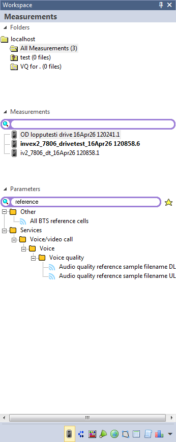
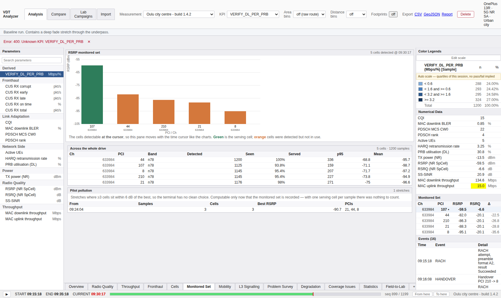
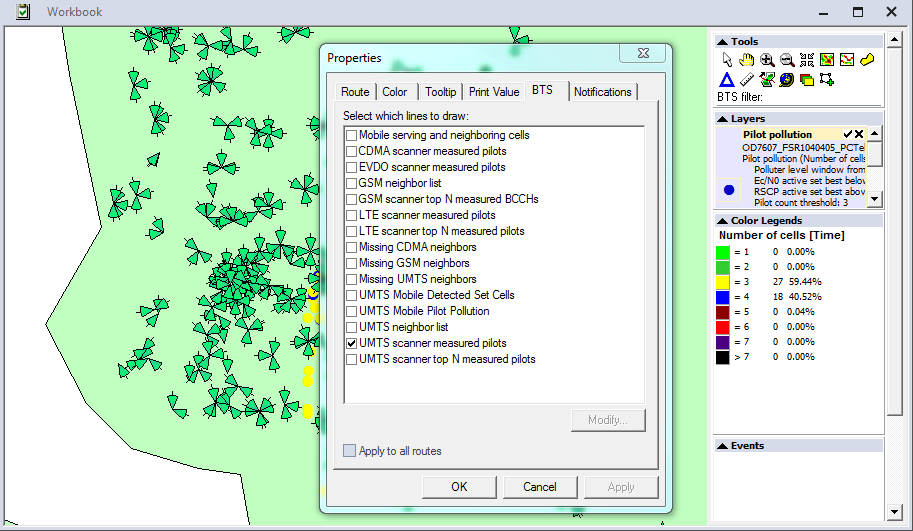

② 분석과 드릴다운
드라이브 테스트 도구의 값어치는 "지도를 그린다"가 아니라 문제를 원인별로 모으고, 한 사례로 좁히고, 그 순간의 다른 모든 값을 같이 보는 연쇄에 있습니다. 레퍼런스는 이 연쇄를 Troubleshooting toolkit이라는 선택 구성요소로 팝니다. 이 문서는 그 연쇄와, 그 옆의 지리 분석 도구들을 다룹니다.
1. Drilldown p87–88
"The Troubleshooting toolkit with drilldown is an optional component of Nemo Analyze. When a query has been performed with one of the Troubleshooting parameters from the Parameters view, it is possible to drill down into further event detail from the data view created by the query." p87

조작
- 파이 차트에서 조각을 더블클릭하거나, 범례의 색/텍스트를 더블클릭
- 그 원인으로 발생한 문제 이벤트 전체가 담긴 그리드가 열림
- 같은 차트에서 드릴다운할 때마다 같은 창에 새 탭이 생김
"Each drill-down from the same chart will open a new tab in the same window. These tabs are displayed on the left side of the window with the colors of the corresponding sectors." p88
매뉴얼의 예: 파이의 초록 조각이 RACH Failure, unknown reason입니다. 조각이나 범례
텍스트를 더블클릭하면 그 실패 이벤트만 모인 그리드가 열리고, 그 그리드는 파이 차트
뷰의 좌측에 초록 탭으로 남습니다.
여기서 우리 판단이 틀렸습니다
우리 격차표는 이 좌측 탭을 "breadcrumb를 좌측 세로 탭 형태로 — 작음, 순수 스타일"로 적어 놨습니다. 매뉴얼을 읽으면 스타일이 아닙니다. 여러 원인을 동시에 열어 두고 오가는 기능입니다. RACH 실패와 핸드오버 실패를 나란히 놓고 비교하는 것이 이 도구의 실제 사용법입니다.
우리는 Back to all categories 한 단계뿐이라 한 번에 하나만 볼 수 있습니다.
"작음/스타일"이 아니라 중간 규모의 기능 격차로 재분류합니다.
우리 구현에는 어떻게 반영됐나
연쇄 자체는 만들었습니다. Problem Survey 탭이
원인별 파이 → 사례 목록 → 그 순간을 걷습니다. 검증도 이 연쇄를 통째로 확인합니다 —
조각을 누르면 사례 목록이 그 원인 하나로만 좁혀지는지(new Set(cats).size === 1),
사례를 누르면 공유 커서가 실제로 움직이는지까지.
다른 점은 셋입니다.
| 항목 | 레퍼런스 | 우리 |
|---|---|---|
| 진입 조작 | 더블클릭 (조각 또는 범례) | 한 번 클릭 (조각 또는 표 행) |
| 동시 유지 | 드릴다운마다 좌측 탭, 색이 조각 색 | 한 번에 하나 |
| 구성 | 유료 선택 구성요소 | 기본 포함 |
클릭 횟수 쪽은 우리가 낫다고 봅니다 — 한 번 클릭이 더 빠르고, 파이 조각의 더블클릭은 발견하기 어려운 조작입니다. 고쳐야 하는 것은 동시 유지 쪽입니다.

Problem Survey — 원인별 파이, 사례 목록, 커서 연동.
좌측 탭 누적이 없어 한 번에 한 원인만 열립니다2. Correlate Parameters p83–86
드릴다운 옆에 있는, KPI Workbench보다 가벼운 상관 도구입니다.
Tools | Query manager | Add… | Correlate parameters로 저장 가능한 KPI를 만들거나,
Workspace의 장치를 우클릭 → Correlate Parameters로 한 번 쓰고 버립니다.
세 가지 모드가 있고, 이 셋의 구분이 중요합니다.
| 모드 | 출력 행이 생기는 조건 | 매뉴얼이 든 용도 |
|---|---|---|
| Show values when first parameter changes (left outer join) |
첫 파라미터가 바뀔 때마다. 나머지는 그 시점의 current / previous / next 값 | "드롭콜 직전의 TX power · Ec/N0 · RSCP" |
| Show values when any of the parameters changes (outer join) |
어느 파라미터든 바뀌면. 나머지 열은 빈 채로 남을 수 있음 | Excel 내보내기 |
| Show values when all parameters are valid (inner join) |
바뀌었고 전부 유효할 때만 | 산점도 입력, 커스텀 검색 기준 이벤트 |
매뉴얼의 inner join 예가 곧 커스텀 KPI입니다 — "all rows where Ec/N0 < -7, BLER DL, and RSCP < -79" p87.
우리 구현에는 어떻게 반영됐나 — 세 모드 중 하나를 이미 갖고 있습니다
우리 COMBINE 노드는 모든 입력의 표본을 합집합한 키 스파인에 각 입력을
LEFT JOIN합니다. 이것은 정확히 outer join 모드입니다 — 어느 입력이든 값이 있으면
행이 생기고 나머지는 NULL로 남습니다.
| 레퍼런스 모드 | 우리 |
|---|---|
| outer join | 동등 COMBINE의 기본이자 유일한 동작 |
| inner join | 우회 가능 하류 FILTER로.
SQL에서 NULL과의 비교는 참이 아니므로 조건을 건 열이 비어 있는 행은 자동으로 떨어집니다 |
| left outer join (primary 게이팅) | 표현 불가 "어느 입력이 primary인가"라는 개념이 우리 그래프에 없습니다 |
그리고 previous / current / next는 우리에게 아예 없습니다. 매뉴얼이 든 대표 용도가 바로 "드롭 직전의 값"인데, 이것이 근본 원인 분석의 핵심 질문입니다. "이 순간의 값"은 우리도 되고, "이 직전의 값"은 안 됩니다.
3. 지리 분석
3.1 Area binning — UC15 p150

- Tools 패널의 Area Binning 아이콘 → 지도에서 영역 선택
Select Measurement다이얼로그에서 대상 측정 파일 추가 (선택 영역에 걸친 경로는 기본으로 포함)Measurement parameters에서 집계할 파라미터 선택
우리 구현
있습니다. 우리 영역 비닝은 지도 위에 격자를 만들고 빈마다 집계합니다. 차이는 진입입니다 — 레퍼런스는 지도에서 영역을 그려서 시작하고, 우리는 빈 크기를 골라 드라이브 전체를 격자화합니다. "이 사거리만" 같은 임의 영역 선택이 우리에겐 없습니다.

3.2 Lee's criteria 거리 표본화 p55

"Define the distance in meters … Note that distance 40λ should be used when running a query for the band. The formula for wave length = v/f … The average of the selected parameter is calculated for each aggregated distance bin. Each bin receives a time stamp and location based on the first event's time stamp and latitude/longitude of the bin."
대상은 스캐너의 Ec/N0 · RSCP · RX level(RSSI) · RSRP · RSRQ이며 별도 라이선스 옵션입니다. 40λ를 실제로 계산하면:
| 대역 | λ | 40λ |
|---|---|---|
| n78 (3.5 GHz) | 8.6 cm | 3.4 m |
| LTE 1800 | 16.6 cm | 6.7 m |
| LTE 800 | 37.5 cm | 15 m |
우리는 이 이름을 근거로 댔지만 구현하지 않았습니다
우리 거리 빈은 50 / 100 / 250 m입니다. 40λ보다 두 자릿수 큽니다. 거리 비닝 자체는 유효하고 정차가 평균을 끌어당기는 문제를 없앤 것도 사실이지만, "Lee's criteria"라는 이름을 붙일 자격은 없습니다.
붙이려면 캐리어 주파수에서 40λ를 계산해 빈 크기로 제안하면 됩니다 —
변환 함수는 이미 있습니다(FieldToLabService.centreFreqMhz, TS 38.104 래스터).
빈의 좌표도 다릅니다: 레퍼런스는 첫 이벤트의 위경도, 우리는 빈 내 평균입니다.
3.3 Cell footprints — UC1 p66

"Cell/RSCP/LTE footprint is displayed for every cell whose signal has been among the three strongest at some point during the measurement session. The footprint of each cell is displayed on map on a separate page, allowing you to browse from footprint to another."
진입은 측정 파일 우클릭 → Analyses | RSRP Cell Footprints (mobile) 식입니다
(Ec/N0 · RSCP · RSRP · RSRQ × mobile/scanner 조합). Scrambling code 필터와 channel number 필터 중
하나를 고르고, 범례와 전체 경로를 표시할지 선택합니다.
매뉴얼은 "Analysis will not work properly if there will be hundreds of pages" —
필터로 결과를 줄이라고 경고합니다.
우리 구현
푸트프린트는 만들었습니다 — 측정된 서빙 표본의 볼록 껍질(Andrew's monotone chain)로 셀별 폴리곤을 그립니다. 두 가지가 다릅니다.
| 항목 | 레퍼런스 | 우리 |
|---|---|---|
| 포함 기준 | 3강 안에 든 적이 있는 모든 셀 | 서빙이었던 셀 |
| 표시 | 셀마다 별도 페이지, 탭으로 이동 | 지도에 전부 겹쳐서, 토글 하나 |
포함 기준 쪽은 이제 바꿀 수 있습니다 — V7의 sample_neighbour가 순위별
이웃을 갖고 있으므로 "3강 안에 든 적 있는 셀"을 그대로 질의할 수 있습니다.
푸트프린트가 서빙 기준일 때보다 넓어지고, 그것이 오버슛 판단의 실제 근거입니다.
표시 쪽은 우리 방식이 낫다고 봅니다 — 겹쳐 보여야 중첩이 보이고, 중첩이 곧 파일럿 오염이니까요. 다만 셀이 수십 개가 되면 우리 화면도 읽을 수 없게 됩니다.

3.4 Pilot pollution — UC20 p172

- Parameters 뷰에서
Pilot pollution을 우클릭 →Open In | Map - carrier number를 묻습니다 — BTS 파일의 값과 일치해야 합니다
- Base stations 탭에서 BTS 파일을 지도로 드래그 → "경로를 BTS와 연결할까요?" → Yes
- 같은 channel number를 입력하면 측정된 파일럿들이 선으로 그려집니다
우리 구현
선까지 있습니다. Mobility 탭에서 단말 위치에서 보이는 셀들로 점선을 긋고,
Monitored set 패널이 파일럿 오염 구간을 표로 냅니다.
그리고 레퍼런스에 없는 판정 기준을 하나 넣었습니다:
POLLUTION_MIN_BEST_DBM = -110. 이게 없으면 커버리지 홀이 파일럿 오염으로
오탐됩니다 — 모든 셀이 똑같이 약하면 "여러 셀이 비슷하게 강함" 조건이 참이 되니까요.
검증이 이것을 매번 확인합니다(보고된 모든 구간의 best RSRP ≥ −110).
조작 절차는 훨씬 짧습니다 — 레퍼런스는 carrier number를 두 번 입력하고 BTS 파일을 드래그해야 하지만, 우리는 셀 정보가 DB에 있어 탭 하나로 끝납니다.

Monitored set — 커서 시점의 셀 목록, 드라이브 전체 검출표,
파일럿 오염 구간3.5 Cell locator — UC21 p174

"Cell locator is an algorithm that estimates the site locations and antenna directions of individual cells based on measured signal strength per cell … a confidence number (1—10) is reported per estimated cell location, with accuracy of <100 meters when data is collected from opposite sides of the BTS."
실행 시 묻는 입력이 셋입니다:
| 입력 | 의미 |
|---|---|
| Minimum accuracy | 6 이상이면 <100 m급만. 9–10은 데이터가 조밀하지 않으면 결과가 전부 걸러질 수 있음 |
| Carrier number | 채널 번호 단위로 분석 |
| Minimum received power | 임계 미만 제거. 매우 낮은 전력에서 단말·스캐너가 유령 셀을 보고하므로 정확도가 올라감 (LTE −120 dBm, UMTS −100 dBm) |
우리 구현 — 없습니다. 그런데 우리가 더 유리한 위치에 있습니다
Cell locator는 우리에게 없습니다. 그런데 이 기능은
"측정에서 추정한 위치"와 "실제 위치"의 오차가 전부인 알고리즘이고,
우리는 실제 위치를 알고 있습니다 — cell_ref에 사이트 좌표와 방위각이
들어 있으니까요.
즉 레퍼런스가 보여줄 수만 있는 초록-보라 그림을, 우리는 오차를 수치로 검증하면서 만들 수 있습니다. 추정기가 실제로 얼마나 맞는지를 매 실행마다 단언하는 검사를 붙일 수 있다는 뜻입니다. 우리 데이터가 합성이라는 점이 여기서는 약점이 아니라 장점이 됩니다.
푸트프린트 볼록 껍질과 sample_neighbour가 이미 있으므로 입력은 갖춰져 있습니다.
3.6 그 밖의 지도 분석
| 기능 | 원문 | 우리 |
|---|---|---|
| UC14 — BTS 커버리지로 경로 채색 | p148 | 서빙 셀 채색은 있음 |
| UC17 — 기지국 빔 범위 지도 표시 | p162 | 없음 |
| UC18 — BTS 오버레이와 그리드 행 동기화 | p168 | 커서 동기화로 대응 |
| UC22 — 5G 빔 시각화 | p177 | 없음 |
| UC23 — Google Earth로 서빙 셀 선 내보내기 | p177 | GeoJSON 내보내기 |
| UC13 — 맵 레이어 추가·저장 | p150 | Layers 도크 |

cell_ref에
방위각과 빔폭이 있으므로 데이터는 이미 있습니다4. 이 문서에서 남은 일로 확인된 것
| 항목 | 규모 | 왜 |
|---|---|---|
| 드릴다운 다중 탭 (조각 색 유지) | 중간 | 스타일이 아니라 여러 원인 동시 비교. 재분류됨 |
| Previous / Current / Next 상관 | 중간 | "드롭 직전의 값" — 근본 원인 분석의 핵심 질문 |
| 푸트프린트 포함 기준을 3강 안으로 | 작음 | V7 데이터로 바로 가능. 오버슛 판단의 실제 근거 |
| 거리 빈에 40λ 옵션 | 작음 | 이름값을 하려면. 변환 함수는 이미 있음 |
| Cell locator | 중간 | 우리는 정답을 알고 있어 검증 가능한 형태로 만들 수 있음 |
| 지도에서 임의 영역 선택 비닝 | 중간 | "이 사거리만" 질의 |